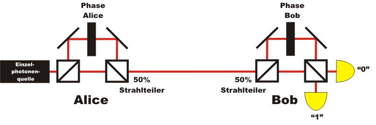
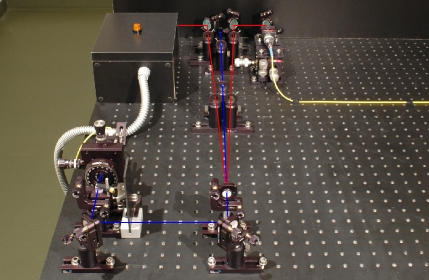

Quantenkryptographie Kapitel 4:
Ablauf, Forschung und Einzelphotonenquelle
Im letzten Kapitel zur Schlüsselverteilung mit zwei Basen wurde gezeigt, dass das System mit einzelnen Photonen durch die Entdeckung von möglichen Spionen eine Sicherheit von 100% bietet. Auf dieser Seite wird in kurzen Abschnitten das Grundlagenwissen der letzen Kapitel vertieft.
Vertiefung Grundlagen: Abschnitt 1: Der genaue Ablauf der Quantenkryptographie Abschnitt 2: Vom ersten Vorschlag bis zur aktuellen Forschung Abschnitt 3: Verbindung über Freistrahlstrecke oder Glasfaserkabel? Vertiefung Fortgeschritten: Abschnitt 4: Kodierung der Photonen über die Phase Abschnitt 5: Die Einzelphotonenquelle im Demonstrationsexperiment Abschnitt 6: Koinzidenzen im Demonstrationsexperiment
Abschnitt 1: Der genaue Ablauf bei der Quantenkryptographie
Um die Quantenkryptographie von Anfang an sicher zu machen, muss der folgende Ablauf für das BB84-Protokoll genau eingehalten werden:
Schritt 1 Authentifizierung Schritt 2 Schlüsselübertragung Schritt 3 Löschung falscher Basen Schritt 4 Test auf Spion Schritt 5 Filtern der Fehler Schritt 6 Code zur Authentifizierung Schritt 7 Verschlüsseln der Nachricht Schritt 8 Versenden der Nachricht Schritt 9 Entschlüsseln der Nachricht Bob entschlüsselt die geheime Nachricht mit seinem Schlüssel über die binäre Addition. Mit dem oben eingehaltenen Prozdere war die Verschlüsselung zu 100% sicher.
Die Schritte 1-6 dienen nur der Erzeugung eines geheimen Schlüssels mit Hilfe der Quantenphysik. Da am Anfang zur Authentifizierung schon immer ein Schlüsselteil übertragen wird (Schritt 1) handelt es sich bei diesem Verfahren eigentlich nur um ein Schlüsselwachstum. Erst im Schritt 7-9 findet die eigentliche Kryptographie statt, bei der die Quantenphysik nicht mehr benötigt wird. Das gesamte System kann mit Hilfe von Quantenzufallsgeneratoren und elektrooptischen Polarisationsdrehern vollautomatisch betrieben werden. Die Datenraten in den kommerziell erhältlichen Quantenkryptographieystemen mit Glasfaserkabel betragen momentan bei einer Reichweite von 25km ca. 1,5 kBit/s [IdQ08].
Abschnitt 2: Vom ersten Vorschlag bis zur aktuellen Forschung
Der erste theoretische Vorschlag zur Quantenkryptographie wurde 1984 von den Wissenschaftlern Bennet und Brassard veröffentlicht [Ben84]. Der Vorschlag wird seither als BB84-Prokotoll bezeichnet. 1992 wurde das vorgeschlagene Prokotoll zum ersten Mal experimentell mit einer Freistrahlstrecke von 30cm realisiert [Ben92]. Bereits im Jahr 2001 wurde ein System mit einer Reichweite von 1,9km und einer Roh-Datenrate von 33kBit/s getestet [Rar01]. Im Jahr 2002 gelang es einer Forschergruppe aus München den Schlüssel von der Zugspitze zur Karwendelspitze sicher zu übertragen [Kur02]. Die Übertragungsstrecke betrug hier 23,4km in klarer und turbulenzfreier Höhenluft. Das gleiche System wurde im Jahr 2006 über den Dächern von München in turbulenter und verschmutzter Stadtluft mit einer Übertragungsstrecke von 480m getestet [Wei06]. Im Jahr 2007 gelang die sichere Schlüsselverteilung zwischen den Inseln La Palma und Teneriffa [Sch07]. Der Übertragungsweg betrug hier 144km in klarer Meeresluft.
Abschnitt 3: Verbindung über Freistrahlstrecke oder Glasfaserkabel?
Die bisher beschriebenen Quantenkryptographiesysteme verwendeten als Kodierung die Polarisation (vertikal polarisiert = 0, horizontal polarisiert = 1). Die Systeme funktionieren reibungslos bei freier und direkter Sichtverbindung zwischen Sender und Empfänger. Wenn starker Nebel, viel Staub oder Smog in der Luft liegt werden die meisten Photonen bei der Übertragung gestreut und kommen nicht mehr beim Empfänger an. Die Kryptographiesysteme werden duch diese natürlichen Umwelteinflüsse in der Übertragungsrate stark reduziert oder können sogar gar nicht mehr eingesetzt werden. Für die alltägliche Kommunikation sollte die Übertragungsstrecke unabhängig von Umwelteinflüssen sein. Am geeignetsten sind hierzu Glasfaserkabel, die unterirdisch verlegt werden können. Normale Glasfaserkabel haben jedoch die Eigenschaft, dass die Polarisaiton nicht erhalten bleibt. Je nach Biegung oder Streckung der Glasfaser verändert sich die Polarisation von Licht. Für die Quantenkryptographie mit Polarisationskodierung sind frei verlegte Glasfaserkabel somit nicht geeignet. Eine Alternative bietet die Kodierung der Photonen über der Phase, da sich diese in Glasfaserkabeln nicht ändert. Die im oberen Abschnitt beschriebenen Schritte zum Ablauf der Quantenkryptographie sind für die Phasenkodierung die gleichen wie bei der Polarisationskodierung.
Vertiefung Fortgeschritten:
Abschnitt 4: Kodierung der Photonen über die Phase
Anstatt Photonen über die Polarisation zu kodieren, kann als Kodierung auch die Phase φ der Photonen verwendet werden. Das System zur Quantenkryptographie über die Phase φ funktioniert über das Quantenphänomen Einzelphotoneninterferenz im Interferometer. Für die Quantenkryptographie mit Phasenkodierung wird ein großes Mach-Zehnder Interferometer in zwei Interferometer aufgeteilt. Ein Interferomteter steht bei Alice und ein Interferometer steht bei Bob (Abb. 1). In jedem Interferometer wird die Phase über ein zusätzliches optisches Element in einem Interferometerarm geändert.
Der Phasenunterschied Δφ = φAlice - φBob der beiden Interferometer wird zur eindeutigen Informationsübertragung genutzt. Der Phasenunterschied Δφ=0 entspricht der binären "0", der Phasenunterschied Δφ=π entspricht der binären "1". Das gesamte System der Quantenkryptographie über die Phase benötigt präzise interferometrische Stabilität.

Abb. 1: Quantenkryptographie mit einzelnen Photonen und Phasenkodierung
Da die Phase der einzelnen Photonen in einer Glasfaser nicht verändert wird, kann die Übertragung zwischen Alice und Bob in normalen Glasfaserkabel erfolgen. Eine direkte Sichtverbindung wie bei der Polarisationskodierung ist nicht erforderlich. Erste Systeme wurden 2002 in der Schweiz zwischen den Städten Lausanne und Genf getestet [Stu02]. Das Glasfaserkabel zwischen den Städten hatte bei diesem Experiment eine Länge von 67km. "Plug- and Play" - Systeme zur Quantenkryptographie über die Phase sind bereits heute mit Glasfaserkabel kommerziell erhältlich [IdQ08]. In der Schweiz werden solche Systeme zur Übertragung von wichtigen Informationen bereits serienmäßig eingesetzt [Pat07].
Neben den hier beschrieben Quantenkryptographiesystemen mit jeweils einem einzelnen Photon gibt es auch Systeme der Quantenkryptographie mit verschränkten_Photonenpaaren [Eke91] oder mit kontinuierlichen Variablen [Ral00]. Die Quantenkyptorgaphie mit verschränkten Photonenpaaren wird im nächsten Kapitel ausführlich erläutert (Kapitel_5). Einen fachlich anspruchsvollen aber sehr guten Überblick über die Systeme zur Quantenkryptographie und dem Stand der aktuellen Forschung bieten die Übersichtsartikel von Gisin und Tittel [Gis02] oder von Lo und Lütkenhaus [Lo07].
Abschnitt 5: Die Einzelphotonenquelle im Demonstrationsexperiment
Die Sicherheit des Quantenkryptographiesystem ist nur dann gegeben, wenn pro Puls ein einzelnes Photonen übertragen wird. An der Einzelphotonenquelle auf Knopfdruck wird allerdings noch intensiv geforscht. Für unser Demonstrationsexperiment der Quantenkryptographie (siehe Kapitel 2 und 3) verwenden wir eine Photonenpaarquelle, die über einen Trigger einzelne Photonen ankündigt (Abb. 2). Diese Photonenpaarquelle ist ausführlich mit der Angabe der genauen Photonenstatistik im Kapitel Existenz_des_Photons beschrieben. Das eine Photon des Photonenpaares aus dem Kristall wird zum Triggern genutzt, das andere Photon wird in ein polarisationserhaltendes Glasfaserkabel eingekoppelt und zum eigentlichen Quantenkryptographiesystem geleitet. In unserem Experiment sendet der blaue gepulste Laser (405nm) zum Erzeugen der Photonenpaare auf Knopfdruck einen einzelnen Puls aus. Nach jedem einzelnen Laserpuls muss die Richtung der Polarisationsdreher im Quantenkryptographiesystem neu eingestellt werden, da immer ein Photon vorhanden sein kann. Für die interaktiven Experimente wurden alle Datensätze gelöscht, in denen keine Koinzidenzereignisse vorhanden waren. Alternativ kann die angekündigte Einzelphotonenquelle durch eine Einzelphotonenquelle mit Farbzentrum ersetzt werden [Bev02].

Abb. 2: Photonenpaarquelle für die Quantenkryptographie
linker Zweig: Detektor zum Triggern, rechter Zweig: Einkopplung in Glasfaserkabel
Bei den im oberen Abschnitt erwähnten Experimenten mit Freistrahlstrcken bis zu 144km werden für das BB84 Protokoll abgeschwächte Laserpulse verwendet. Diese einzelnen Laserpulse können jedoch zwei oder mehr Photonen enthalten. Ein Spion kann hier unbemerkt aus jedem übertragenen Puls einzelne Photonen mit Hilfe eines Strahlteilers herausholen und unbemerkt messen. Die Sicherheit der sicheren Schlüsselübertragung wird aufgrund dieser Strahlteilerattacke erheblich reduziert. Mögliche Lösungen der Strahlteilerattacke sind Decoy-State Protokolle. Bei diesen Decoy-State Protokollen (Decoy engl. Falle) werden neben den normalen Pulsen zur Informationsübertragung zusätzliche Pulse ausgesendet. Mit Hilfe dieser zusätzlichen Pulse kann, z. B. durch die Messung der Photonenstatistik, eine solche Strahlteilerattacke festgestellt werden [Hwa03], [Zha06], [Mau07].
Abschnitt 6: Koinzidenzen im Demonstrationsexperiment
In unseren interaktiven Demonstrationsexperimenten zur Quantenkryptographie (siehe Kapitel 2 und 3) wird jedes gesendete Photon registriert. Dies wird in unserem realen Demostrationsexperiment erreicht, indem der blaue 405nm Laser vor dem Kristall nach der Betätigung des Tasters "Einzelmessung" so lange einzelne Pulse aussendet, bis eine Koinzidenz zwischen dem Trigger Detektor und einem Detektor hinter dem Strahlteiler registriert wird. Danach geht der gepulste Laser in den Ruhezustand und kann wieder über den Taster gestartet werden. Die gemessene Koinzidenz wir über die Lampen auf den Detektoren angzeigt. Würde der Laser bei jedem Knopfdruck nur einen einzelnen Lichtpuls aussenden, so gäbe es sehr oft keine Koinzidenz, bzw. nur eine einzelne Detektion bei dem Triggerdetektor oder bei den Detektoren hinter dem Strahlteiler. Die Lampen würden bei den meisten Tastendrücken für Einzelpulse dunkel bleiben. Dies liegt an der geringen Konversionseffizienz im Kristall, an der nicht optimalen Einkopplung in Glasfaserkabel, an der Streuung der Photonen auf dem Übertragungsweg und an der geringen Detektoreneffizienz. Für die richtige Anwendung muss nach jedem einzelnen Laserpuls die Richtung der Polarisationsdreher zufällig geändert werden. Um das Prinzip der Quantenkryptographie allgemein verständlich zu machen, umgehen wir diese Probleme durch wiederholende Laserpulse bis eine Koinzidenz erfolgt.
Zum Kapitel 5: Quantenkryptographie mit verschränkten Photonen [klick]
Zurück zur Übersicht [klick]
Autor: P. Bronner, August 2008